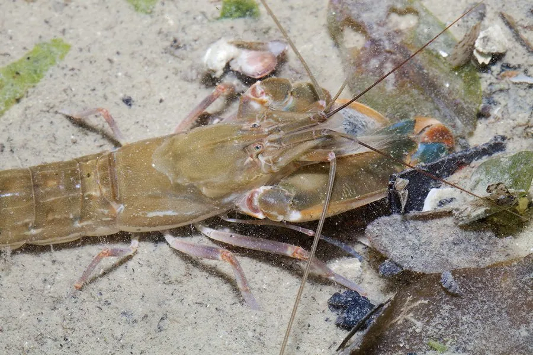

甲壳动物 · 动物界
鲜明鼓虾 Alpheus distinguendus

生活在浅海泥沙中的小型虾类，有一只不对称的大螯，闭合时能发出清脆的爆响声，用来震慑敌人和击晕猎物。
- 分类
- 门节肢动物门纲软甲纲目十足目科鼓虾科属鼓虾属
- 栖息环境
- 浅海沙泥底的洞穴中，常与虾虎鱼共生
- 地理分布
- 中国沿海、日本和东南亚海域
- 保护级别
- IUCN 暂无评估；中国未列入国家重点保护名录
物种志
鲜明鼓虾体长 4–6 cm，身体半透明，呈淡黄或浅褐色，带有深色斑纹；它的一只螯足特别大，指节可以快速闭合，另一只螯足较小。
它分布于中国沿海、日本和东南亚的浅海沙泥底，栖息于自己挖掘的洞穴中，常与虾虎鱼共生，一个负责挖洞警戒，一个视力好负责放哨。鲜明鼓虾闭合大螯时能产生高速水流和爆响声，用来击晕小鱼小虾或吓退捕食者，这种声音在海底形成独特的“虾声”。大螯闭合的速度极快，是研究空化现象的模型；它的洞穴常有多个出口，鼓虾群落的爆响声甚至可被声呐探测到。它夜间活动，取食小型甲壳动物和有机碎屑。目前 IUCN 暂无评估；中国未列入国家重点保护名录。
形态与习性
- 食性小型甲壳动物和有机碎屑
- 体长4–6 cm
- 识别一只螯足特别大，身体半透明带斑纹
- 发声闭合大螯产生爆响和高速水流
- 共生常与虾虎鱼共用洞穴
- 习性夜间活动，洞穴常有多个出口
趣味知识
- 鲜明鼓虾闭合大螯时会发出一声脆响，因此又叫枪虾。
- 它的大螯闭合速度极快，能在水中产生瞬间的空化气泡。
- 鼓虾常和虾虎鱼住在一个洞里，一个挖洞，一个放哨。